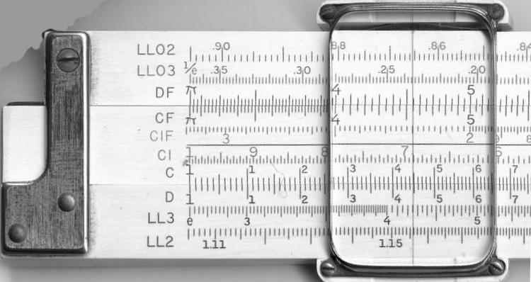

Dispositivos mecánicos#
3000 a.C. Ábaco#
{kind=link}
1452 - 1519 Leonardo da Vinci#
En el Renacimiento Leonardo da Vinci (1452-1519) diseño como debería ser una calculadora (una caja con siete ruedas similar al dispositivo cuenta kilómetros de un coche). Este invento como tantos otros del genial personaje, no se llegaron a materializar porque la tecnología de la época no disponía de los medios suficientes.
{kind=link}
1612 - 1614 Varillas de John Napier#
Soun Utilizadas para Calcular
1622 Reglas de cálculo de William Oughtred#
Cálculo de logaritmos
{kind=link}
1642 Pascalina, la máquina de Pascal#
Primera máquina capaz de sumar y restar
{kind=link}
{kind=link}
Las ruedas representaban el «sistema decimal de numeración». Cada rueda constaba de diez pasos, para lo cual estaba convenientemente marcada con números del 9 al 0. El número total de ruedas era ocho (seis ruedas para representar los números enteros y dos ruedas más, en el extremo izquierdo, para los decimales). Con esta disposición «se podían obtener números entre 0’01 y 999.999’99». Mediante una manivela se hacía girar las ruedas dentadas. Para sumar o restar no había más que accionar la manivela en el sentido apropiado, con lo que las ruedas corrían los pasos necesarios. Cuando una rueda estaba en el 9 y se sumaba 1, ésta avanzaba hasta la posición marcada por un cero. En este punto, un gancho hacía avanzar un paso a la rueda siguiente. De esta manera se realizaba la operación de adición.
1674 Máquina de Leibnitz#
Sumas, restas, multiplicaciones y divisiones
{kind=link}
1801 Telares Jacquar#
Tarjetas perforadas controlan el telar
{kind=link}
{kind=link}
1820 Arithmometer#
Primera calculadora producida en masa
{kind=link}
1822 Máquina diferencial de Charles Babbage#
{kind=link}
El principio de una máquina diferencial es método de Newton de diferencias divididas.La tabla de abajo se construye como sigue:
la primera columna contiene los valores de X
la segunda los valores del polinomio
la tercera, cuarta y quinta contiene las diferencias de los dos vecinos izquierdos en la primera columna
x |
P(x)=x³-x²+1 |
Diferencias |
Diferencias |
Diferencias |
|---|---|---|---|---|
0 |
1 |
|||
0,009 |
||||
0,1 |
0,991 |
-0,014 |
||
0,023 |
-0,006 |
|||
0,2 |
0,968 |
-0,008 |
||
0,031 |
-0,006 |
|||
0,3 |
0,937 |
-0,002 |
||
0,033 |
-0,006 |
|||
0,4 |
0,904 |
0,004 |
||
0,029 |
-0,006 |
|||
0,5 |
0,875 |
0,010 |
||
0,019 |
-0,006 |
|||
0,6 |
0,856 |
0,016 |
||
0,003 |
||||
0,7 |
0,853 |
Cualquier polinomio de grado n, la columna número n + 1 siempre será constante.
La máquina diferencial No. 2 de Babbage, finalmente construida en 1991, podía tener 7 números de 31 dígitos decimales cada uno y por lo tanto podía tabular polinomios de 7.º grado con esa precisión. Las mejores máquinas de Scheutz podían almacenar 4 números con 15 dígitos cada uno.
1834 Máquina analítica de Charles Babbage#
La máquina analítica debía funcionar con un motor a vapor y habría tenido 30 m de largo por 10 de ancho. Para la entrada de datos y programas había pensado utilizar tarjetas perforadas, mecanismo ya utilizado en la época para dirigir diversos equipos mecánicos. La salida debía producirse por una impresora, un equipo de dibujo y una campana. La máquina debía también perforar tarjetas que podrían ser leídas posteriormente. La máquina analítica trabajaba con una aritmética de coma fija en base 10 y poseía una memoria capaz de almacenar 1000 números de 50 dígitos cada uno. Una unidad aritmética estaría encargada de realizar las operaciones aritméticas.
El lenguaje de programación que sería utilizado era similar a los actuales lenguajes ensambladores. Era posible realizar bucles y condicionales. Se utilizaban tres tipos diferentes de tarjetas perforadas: una para operaciones aritméticas, una para constantes numéricas y otra para operaciones de almacenamiento y recuperación de datos de la memoria, y la transferencia de datos entre la unidad aritmética y la memoria. Se disponía de tres lectores diferentes para los tres tipos de tarjetas.
1852 Ada Lovelace#
Augusta Ada King, Condesa de Lovelace, nacida Augusta Ada Byron, (Londres, 10 de diciembre de 1815 - Londres, 27 de noviembre de 1852), conocida habitualmente como Ada Lovelace, fue una matemática y escritora británica conocida principalmente por su trabajo sobre la máquina calculadora mecánica de uso general de Charles Babbage, la Máquina analítica.
Charles Wheatstone, amigo de Babbage, le encargó a Ada traducir el trabajo de Menabrea al inglés, encargo que Ada completó con notas propias que añadió a la traducción. Fue un trabajo que le llevó gran parte de aquel año y durante el cual recibió también la ayuda de Babbage. Sus notas, que terminaron siendo más extensas que el propio trabajo de Menabrea, fueron entonces publicadas bajo las iniciales AAL en las «Memorias Científicas» de Taylor. En 1953, aproximadamente cien años después de su muerte, las notas de Ada sobre la máquina analítica de Babbage fueron publicadas bajo su nombre real, estando ahora reconocida dicha máquina como un modelo temprano de ordenador y las notas de Ada como una descripción de su software. Estas notas fueron etiquetadas alfabéticamente de la A a la G. En la nota G, Ada describe un algoritmo para la máquina analítica para calcular los números de Bernoulli —en el que utilizaba dos bucles que demostraban la capacidad de bifurcación de la máquina de Babbage— y está considerado como el primer algoritmo específicamente diseñado para ser ejecutado por un ordenador, motivo por el que Ada es reconocida como la primera programadora de la historia, aunque su código nunca fue probado ya que la máquina nunca llegó a ser construida.